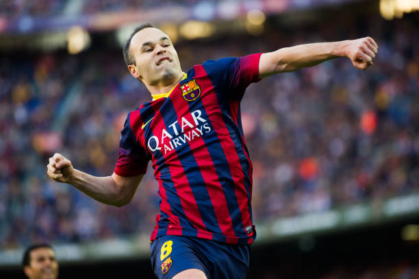

Andrés Iniesta Luján is a Spanish professional footballer who plays as a midfielder and is the captain of J1 League club Vissel Kobe. Considered one of the greatest midfielders of all time, Iniesta spent most of his career at Barcelona, where he served as the captain for three seasons.
Born: 11 May 1984 (age 37 years), Fuentealbilla, Spain
Height: 1.71 m
Current team: Vissel Kobe (#8 / Midfielder)
Spouse: Anna Ortiz (m. 2012)
Salary: 3 crores USD (2021)
Nicknames: Don Andrés, El Anti-Galáctico, El Caballero Pálido, El Cerebro, El Ilusionista
Children: Valeria Iniesta Ortiz, Paolo Andrea Iniesta Ortiz, Siena Iniesta Ortiz